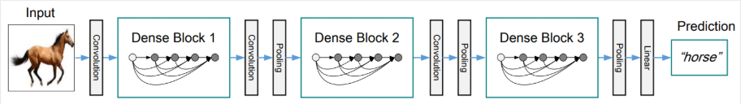
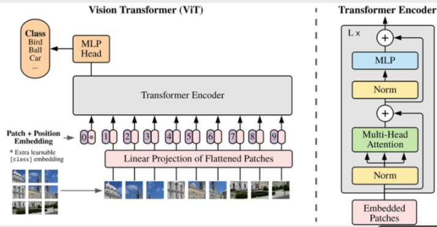

💡 Approach: We compare two state-of-the-art architectures for computer vision: Convolutional Neural Networks (CNN) vs. Vision Transformers (ViT).
CNN: DenseNet

Extracts features hierarchically using dense connectivity patterns, where each layer receives inputs from all preceding layers.
Vision Transformer (ViT)

Splits the image into fixed-size patches, linearly embeds them with position encodings, and feeds them into a standard Transformer encoder.
🔄 End-to-End Forward Pass & Data Shapes
Below is the data pipeline through the model's stages, detailing the Tensor dimensions (Batch Size is denoted as B) and the semantic meaning of the data at each step.
Raw Image
(B, 1, 28, 28)
➔
Preprocessed
(B, 3, 224, 224)
➔
Backbone
(B, Features)
➔
Class Head
Linear(Feat, 10)
➔
Output Logits
(B, 10)
1. Raw Input Image (B, 1, 28, 28)
Raw data from the Fashion-MNIST dataset. Each image is a grayscale pixel matrix (1 color channel) with an original size of 28x28 pixels.
2. Preprocessed Tensor (B, 3, 224, 224)
Images are resized to 224x224 and duplicated into 3 color channels (RGB) to match the input structure of models pre-trained on ImageNet. Pixel values are normalized to a range of [-1, 1].
3. Backbone Output / Feature Vector (B, Features)
The CNN or ViT model acts as a Feature Extractor. The output is a compressed vector containing the high-level semantics of the image.
*For DenseNet121: Features = 1024
*For ViT-Base: Features = 768
4. Classification Head & Output Logits (B, 10)
The original classification head (typically 1000 classes) is replaced with a new Fully Connected Layer. It maps the feature vector (1024 or 768 dimensions) down to exactly 10 dimensions corresponding to the 10 clothing/footwear labels. The output values (Logits) are then passed through the Cross-Entropy Loss function to calculate the error during training.